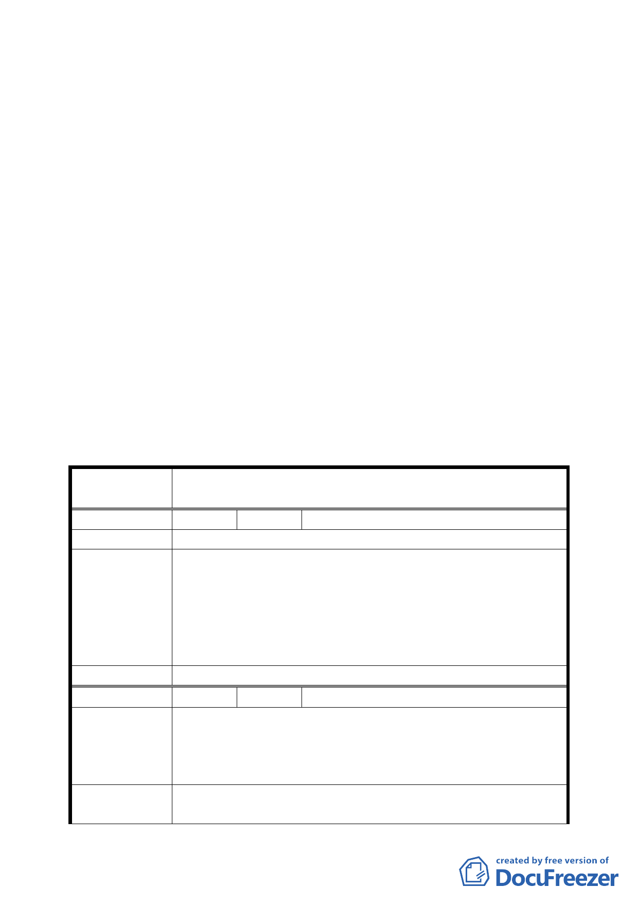

案名：修訂臺北市信義區逸仙段二小段 352-1、353-1 及 353-2 地
號機關用地土地使用分區管制計畫案
說明：
一、本件係市府以九十四年十月二十六日府都規字第０九四一
九五二二九０三號函送到會，並自九十四年十月二十七日
起公開展覽三十天。
二、法令依據：都市計畫法第二十七條第一項第四款。
三、變更位置：詳位置圖所示。
四、變更理由及內容：詳計畫書。
五、公民或團體所提意見：如後綜理表。
決議：
一、照案通過。
二、公民或團體所提意見審決如後附綜理表。
臺北市都市計畫委員會公民或團體所提意見綜理表
案
名
修訂臺北市信義區逸仙段二小段 352-1、353-1
353-2 地號機關用地土地使用分區管制計畫案
及
編 號 １ 陳情人 陳錦郎
陳情理由
一、刑事警察局基地本來就不夠大，為其基地方整建議協調
財政部財稅資料中心搬遷與財政部或國稅局在一起。讓
建
議
辦
法
出之房地供刑事警察局整體規劃興建。
二、都市計畫土地使用分區建蔽率、容積率已有限制機關用
地之建蔽率為 40％最大限制，本案擬變更建蔽率為 48
％，顯然政府帶頭違法在先。
委 員 會 決 議 本計畫案照案通過。
編 號 ２ 陳情人 陳瑞欽
一、不會造成景觀衝擊，可成突出地標。
陳
情
理
由
二、上、下班交通流量之建議。
三、如果考慮整體景觀（本工程另編預算），舊圍牆壓迫感
很大。
建
議
辦
法
一、維持原設計 23 樓。
二、設計單行車道出入口，553 巷入、忠孝東路出，忠孝東
第 四八 頁，共 49 頁